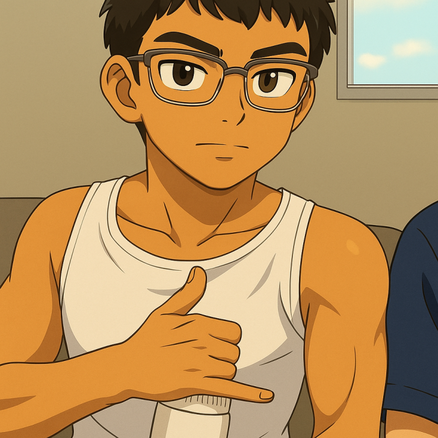

BEM-VINDO
Este é o meu portifolio
Neste portifolio voce ira conhecer mais sobre mim,

Sobre Mim
Desde pequeno, sempre estive rodeado por tecnologia, seja jogando video games, assistindo vídeos ou consumindo conteúdo em geral. No entanto, nunca tive um envolvimento mais profundo com programação ou trabalho relacionado a isso – era mais para entretenimento e diversão pessoal. Mas, como sabemos, a vida adulta chega para todos, e em 2024, tive que tomar uma decisão importante sobre qual caminho seguir na faculdade.
A escolha foi clara: queria trabalhar com programação. Confesso que, no início, senti um certo medo e insegurança, mas eu acredito que Deus sabe o que faz, e hoje estou aqui. Após três semestres de faculdade, muitos estudos autodidatas, e a famosa "vergonha na cara" de finalmente colocar a bunda na cadeira e me dedicar, consegui realizar meu primeiro projeto: o desenvolvimento do meu primeiro portfólio, que eu realmente considero bacana. Caso tenha algum feedback ou queira entrar em contato comigo, acesse a aba Skills e me chame por lá, agradeço o contato desde já.